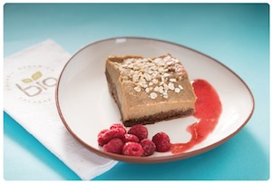

Entradas

- Muzzarella Sticks
- Bastones de muzzarella rebozados
- Jalapeños rellenos
- Jalapeños rellenos de langostinos y queso Cheddar con panceta.
- Ración de Rabas
- 220 gr. de chicharrón de calamar frito con alioli
- Ración de papas fritas con Cheddar y verdeo
- Chicken Wings
- Alitas de pollo empanada y frita con salsa BBQ
- Croquetas de hongos
- Croquetas elaboradas a base de hongos disecados.
- Langostinos en cous cous
- Langostinos a la plancha con frutos secos, tomates cherry, albahaca y cous cous
- Chipirones a la plancha
- Con chutney de mango y sandía a la plancha
- Nachos con refrito
- Nachos salteados con porotos negros, chorizo colorado y salsa BBQ
- Tapa de morcilla
- Pan casero de campo, morcilla, verdeo y queso brie.
- Tapa de campo
- Morcilla, papa, chutney de manzana y crema de eneldo
- Tapa de mollejas
- Mollejas con mango, ananá, jengibre, chiles y pochoclo.
Platos principales

- Bife Criollo
- Ojo de bife con patines andinos, ensalada de rúcula, provolone y salsa criolla
- Ensalada Caesar
- Con langostinos o con Pollo Clásica Caesar Salad con pollo grillado o langostinos
- Penne Rigatte
- Con salsa filete, crema o rosa.
- Ensalada de langostinos
- Langostinos salteados, trabajito, cebolla de verdeo y mango con dressing de naranja, vinagre y aceite de oliva.
- Ceviche (elaborado en el momento)
- Pesca del día del barrio chino con cebolla morada,
ajo, rocoto, apio, cilantro, jengibre, maíz cancha, batata
y leche de tigre. - Pesca con Chop Suey
- Pesca del día a la plancha con olivas, ajo y alcaparras, acompañada de chop suey de vegetales.
- Pesca a la plancha
- Con risotto verde de espárragos y remolacha asada.
- Bife T-Bone
- 600 gas de carne corte T-Bone con chimichurri, patines andinos y encurtido de remolacha.
- Pechuguitas Ahumadas
- Pechugas de pollo ahumadas, rellenas con duxelle de hongos y cebolla. Servido con arroz con mostaza y naranjas almendradas
- Carré de cerdo
- Con Chutney de zanahorias y batatas glaseadas con salsa teriyaki.
- Sorrentinos verdes
- Rellenos con calabaza asada y queso brie, perfumados con manteca de hierbas y jugo de pomelo.
Volver arriba
Postres
- Flan Casero
- Nuestro clásico flan con dulce de leche y crema.
- Ensalada de frutas
- Fondue de chocolate
- Con frutas frescas fileteadas.
- Crocante de Banana y Nutella
- Degustación de Mousses
- Mousse de mango, chocolate, moka y frutos rojos.
- Cheesecake
Volver arriba